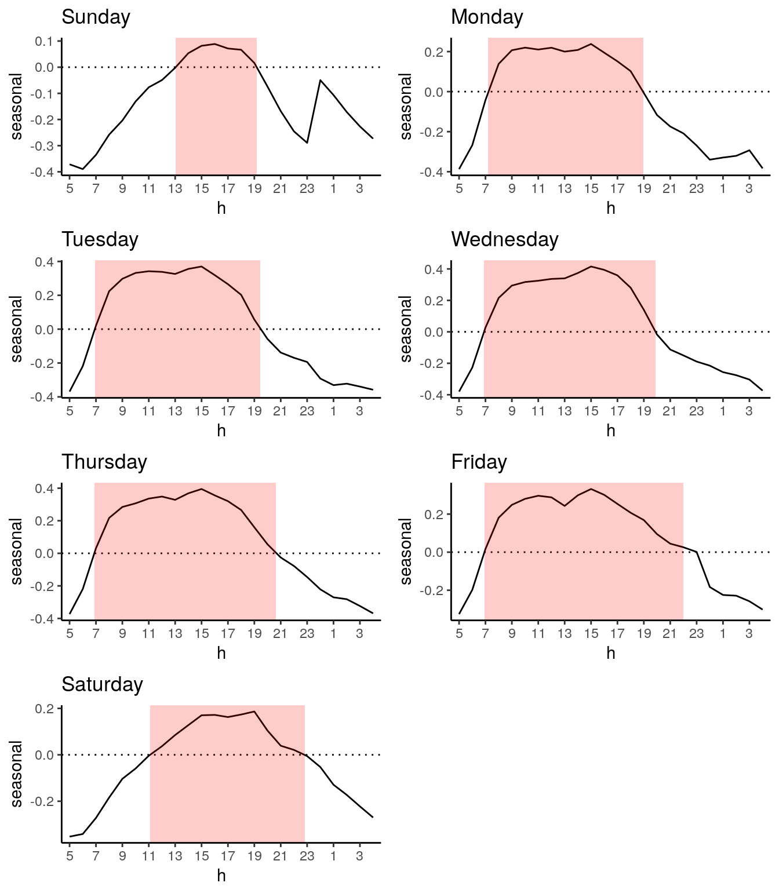
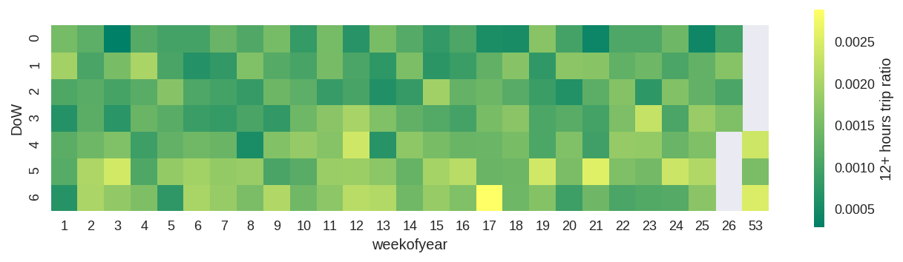
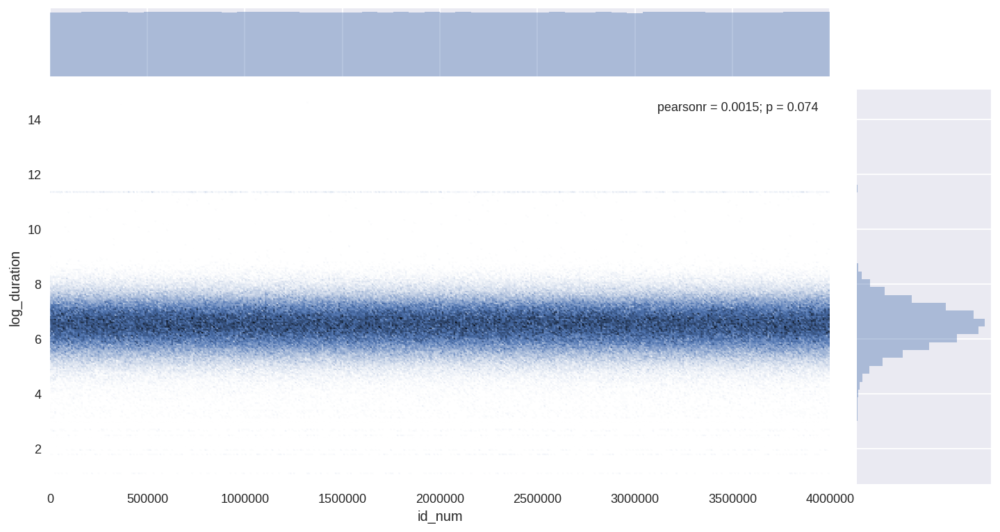
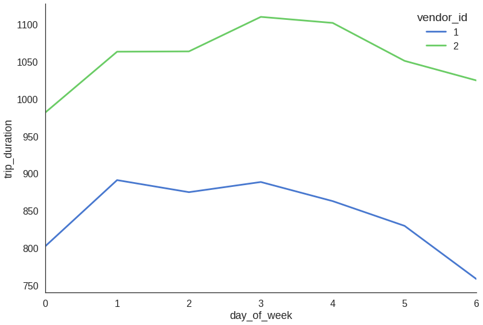

该部分探索纽约城市市民的打车出行习惯，通过对数据的定量分析，针对提出的问题相应地得出了些许结论。
何时为打车需求高发期？下图展示以周为单位对交通繁忙程度的分析。星期一，人们逐渐返回工作岗位，早上7:10交通开始繁忙，晚上7:00交通也开始变轻。 星期二、星期三和星期四我们达到巡航速度，从早上6:50到晚上8:00交通繁忙。 星期五和前几天一样，但直到晚上10点才结束。 星期六从上午11点到晚上23点交通很拥挤，我想原因很明显。 星期天一整天交通都很畅通，但从下午1:00到7:00的交通流量稍高。

我们再以周为单位看看打车的比率。

推测订单数量可能与星期几有关？

推测订单数量可能与星期几有关?我们可以看出其数量周一-周三是最多的
